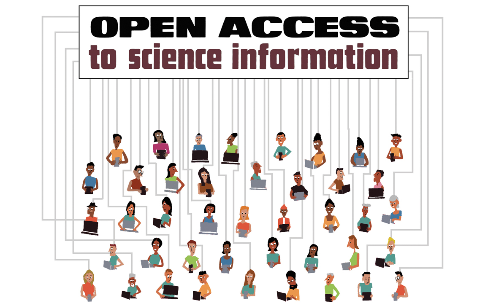
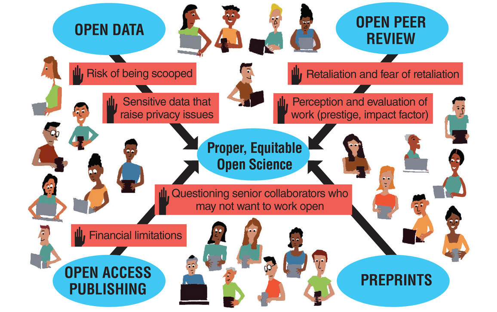
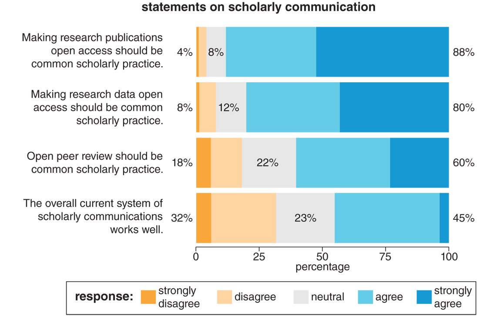

In 2017, the Montreal
Neurological Institute and Hospital opened access to all their brain
imaging, clinical demographics, and DNA information, becoming the
largest open repository of such data in the world. This move may seem
baffling in a field as competitive as biomedical research, but the
reasoning in their announcement was simple: “We realize that we cannot
do everything alone.”
This change is one
of the latest in the open-science movement, which has grown from
grassroots origins to change our most influential scientific
institutions. Indeed, the European Commission and other major funding
organizations have now announced plans to require open-access publishing
for all funding recipients—a policy that could dramatically alter how
thousands of scientists do and share their work.
Open science,
a global movement toward openness in scientific research, is
fundamentally about accountability and transparency of the scientific
enterprise. Rather than keeping data and materials (and ideas) within
the confines of academic research labs, open science invites anyone to
observe, contribute, and create. Academic researchers are part of a
society composed mostly of nonscientists who fund, participate in,
benefit from, and in some cases are the subjects of their research. At
the heart of the open- science movement is the conviction that research
in all fields, from the physical sciences to the humanities, must be
performed in dialogue with society—a responsibility that predicates
“openness” as the core organizing principle for scientific practices.
Yet historically
the culture of science has been a solitary and often secretive endeavor.
Driven initially by a lack of connectivity (such as scientists working
in isolation in labs), as science became a more mainstream pursuit,
“closed” scientific practices continued—through habit, but also because
of an increasing sense of competition between scientists, either for
scant resources or out of a desire to make a new discovery before a
competitor. Because science traditionally has rewarded only scientists
who are the first to discover ideas and publish findings, there is
resistance to move from “closed” practices that protect the secrecy of
ideas to a paradigm that claims that openness and sharing will be
rewarded.
Because open
science is lionized by its practitioners to be a noble, selfless
calling, many of its proponents can be too quick to dismiss this
resistance. As practicing scientists and as proponents of open,
accountable, accessible science ourselves, we wish to examine this
pushback in earnest: Open science is built on the same foundation as
science itself, and inherits many systematic barriers that already exist
in mainstream science.
Because adopting
open practices has far-reaching consequences on what is recognized as
good science and what allows a scientific career to progress, we need to
reject the reactionary response of assuming that open science is
without risks. We hope that understanding barriers we and other early
career researchers have experienced can help open-science proponents
empathize with the constraints under which many scientists operate and
work for solutions that understand the social context science exists
within.
Open science could
only emerge as a response to transformative technological change and web
connectivity. Prior to the advent of the internet, science was
performed under relatively siloed conditions: Scientific papers were
constrained to distribution by academic libraries, it was not practical
to share raw data, computational methods could only be performed in
specialized facilities, and a person typically needed to be a member of a
university community to access science (or scientists). The internet
and computing technology removed such constraints on sharing, openness,
and collaboration; indeed, we wrote this column collectively from eight
institutions in three countries—made possible through these advances in
information technology.

Illustration by Tom Dunne.
Open
science is often seen as a “recent hot topic,” although it has been a
growing part of our scientific conversation for some time: Self-deposit
print servers (also called preprint servers), such as arXiv, have
existed since 1991; leading open-access publishers, such as the Public
Library of Science, were launched starting in 2001; and all U.K.
government funding agencies (known as Research Councils UK or RCUK)
introduced open-access policies as early as 2005. The open-science
movement has increasingly shaped policy surrounding how science is done,
with government funding agencies, private funding bodies, and journals
all stipulating that particular aspects of open science be pursued where
possible.
Yet because open
science can encompass all steps of the scientific process, it is natural
that it means different things to different people: One can open the
process of data collection, data analysis, computer code, manuscript
writing, data publishing, and scholarly publication (to name a few). If
you type “open science” into a search engine, you would pull up
thousands of hits that do any, all, or none of these things. A side
effect of this broad and vague scope, one that has stalled progress in
the open-science movement, is that its advocates often become caught up
in a detailed checklist of whether a project is “open,” based on
tallying whether it hits all the aspects of open science discussed
above, rather than focusing on the core goal of accountability and
transparency.
Open science seeks
to make science accessible to everyone, yet projects that are open in
one way but not all ways are often derided by the open-science
community, without any acknowledgment of the systematic barriers that
make open science more accessible to some scientists than others, nor
any respect for the steps taken to overcome some of these barriers by
scientists who are not necessarily at the most secure point in their
career.
Examples abound,
including “Open Data Excuse Bingo,” an online crowdsourced bingo card
mocking the reasons scientists may give for not participating in some
aspects of open science, and an online article jokingly subtitled “How
to make friends and get them to give you their data.” Both examples
focus on the perceived benefits of “free data” from others as the value
of open science—and the titles are dismissive of legitimate concerns
that disproportionately affect a subset of scientists.
There are many
valid reasons not to participate in an all-or-nothing approach to open
science. Factors such as a scientist’s career stage, employment
stability, financial circumstances, country of origin or residence, and
cultural context (including their race, gender identity, and ethnicity)
may all create barriers to specific aspects of open science. Power
imbalances support some barriers, because of the risk of retaliation
across power hierarchies; our concern about being “called out” for not
meeting the arbitrary milestone of being “open enough” is one reason we
worked together in a large group on this article to share our anonymized
experiences.

Different
open-science activities present various financial and social barriers
to scientists. To address these barriers meaningfully, they must first
be recognized by the open-science community. Doing so would further the
true goal of open science: transparent and accessible science for all.
Illustration by Tom Dunne.
In
addition to advocating for making data, papers, and other parts of
science more open, we advocate for recognizing the structural barriers
that individual scientists may face and not penalizing individuals for
failing to tick all the “necessary” boxes for a project to be considered
open. Such calling out of scientists through all-or-nothing criteria
reduces the accessibility of science and may reify existing inequalities
within this profession.
Accessibility for All Scientists
To
truly achieve open science’s transformative vision, it must be
universally accessible, so that all people have access to the dialogue
of science. Accessible in this context means usable by all,
with particular emphasis on communities often not served by scientific
products. This emphasis includes people with sensory disabilities who
may use access technology, such as blind and low-vision scientists using
screen readers; people in rural or poorer regions with no or slow
internet; and people without the means to pay for scientific
publications. An accessible open science would serve everyone.
This kind of
accessibility can be vital for those who need these scientific findings.
For example, family members of people with rare illnesses may not be
able to afford to go through a paywall and read scientific studies that
may help them access care and resources for their loved one.
It is thus an
unfortunate irony that open-science practices are not equally accessible
to all scientists. We often lament the paywalls that make research
inaccessible to the reader, but we often do not lament the paywalls, in
the form of specific barriers to openness, that prevent many scientists
from sharing their work in the first place. Accessibility does not
happen by accident, but requires us to intentionally evaluate our work,
practices, and organizations to ensure that they are accessible. This
evaluation is a constant iterative process—and not a one-off decision—to
question whether our new praxis has retained the existing structural
inequalities of the one before it.
It is an unfortunate irony that open-science practices are not equally accessible to all scientists.
The
barriers that make open science unequally accessible fall under two
categories: financial and social. The financial barriers are often
impassible for some scientists, especially those who are earlier in
their career, lack job security (as is common among scientists doing
consecutive-term positions such as postdocs), or are at institutions
that lack the financial resources to pay for these fees (such as many
smaller or public institutions without big endowments). Although there
are mechanisms to alleviate some publication costs, such as fee waivers
and institutional pots of money to pay fees, disparities still exist,
including for researchers from some developing nations, researchers at
teaching institutions, or early career scientists in general.
Social barriers are
more nuanced and not as easily quantified. For example, the fear of
retaliation from making fair but critical comments on a senior
colleague’s paper and then signing one’s name as part of open review,
though well justified, makes it less likely for scientists in an
underprivileged position to engage in the practice. Open-access journals
and papers are also not (yet?) viewed to have as much prestige or
influence as traditional high-impact-factor journals by many senior
scientists with power over the career paths of junior scientists, and
early career researchers like us may fear that publishing in them will
indicate that our work is of lesser quality. These difficult-to-measure
barriers are not only as real as more easily measured barriers, such as
not having the financial resources to pay for open-access publication,
but can be more difficult to address because they rely on scientists’
perceptions of their own field.
Most barriers to
open science are made to appear larger by the signaling that exists
around publishing entirely in fully open-access venues. As open science
becomes a more widely accepted practice, an increasing emphasis on the
use of “gold open-access” publishing (as defined by the Sherpa/Romeo
database) has manifested, where additional charges are paid to make a
paper open. Many governments and funding bodies have embraced pledges to
promote and reward such gold-open-access publishing. This acceptance
means that those with adequate financial resources, which are
disproportionately associated with certain countries or institutions
(but also career stages, and there is the gender gap in research funding
to consider), are more able to signal their compliance. Those with
fewer resources appear to circumvent the rules—not by choice, but by
lack thereof.
The
earliest policies regarding open science have been passed in European
countries. How grant funding is allotted for paying open-access article
processing charges each has pros and cons. On the international funding
stage, the Bill and Melinda Gates Foundation requires all research be
made immediately available without any embargo period (which is
realistically only achieved through gold open access).
It is not
unheard of for open-access fees to be paid out of a scientist’s personal
funds, instead of a grant or an institution’s funding sources. Using
thousands of dollars from one’s salary for those fees is not accessible
to everyone. But the need to conform to an emerging practice, through
gold-open-access publishing, can create social pressure to do just that.
There is a cruel irony to the situation, as it is not rare to hear
members of the search committee dismiss an application for a faculty
position for having too many papers in open-access journals. The same
practice can hurt or boost one’s career for reasons that have nothing to
do with science.
Open-science
proponents often argue that preprints, or archiving a copy of an article
in a university repository, achieve the same goals as gold-open-access
publishing—even though many scientists operate out of smaller
institutions that cannot maintain repositories, or they may not be at a
university at all. However, such practices are not valued the same
(preprints do not meet most funding bodies’ open-access requirements),
are not available or widely used in all scientific fields, and do not
send the same virtue signal to the wider community.
Open-access
publishing remains a morally grounded and worthwhile endeavor. But
barriers preventing some scientists from pursuing it should not be
wielded as a way to deny their further participation in science,
including receiving grant funding or being considered for jobs.
Social barriers
highlight the pressures that alter the cost-benefit ratio between
researchers at different career stages and with different lived
experiences. For example, if an early career scientist participates
completely in open-science practices, their publications will land in
journals with lower impact factors or that are perceived to be of lower
quality because they are open access. This publication record can make
these scientists less competitive when job hunting. Debates over the
value of journal impact factor notwithstanding, young scientists are
still evaluated based on the same principles of their predecessors
(large numbers of “high-impact” publications).
Creating open
science has required the development of new tools and products. For
example, scientists may need to write new statistical analysis packages
and can make these available for other researchers, in addition to the
traditional product of a scientific journal article. Yet open tools,
code, or data sets are often not valued the same as “normal” academic
products, and therefore those who spend their limited time and resources
on these products suffer a cost in how they are evaluated for current
and future jobs. Moreover, this kind of openness requires a large time
investment, above and beyond what has been demanded by traditional,
“closed” research. Bias against viewing the infrastructure of open
science as valuable or legitimate productivity disincentivizes early
career and contingent scientists from participating because they are
under enormous pressure to “publish or perish.”
Barriers preventing
some scientists from pursuing open science should not be wielded as a
way to deny their further participation.
Bias
against early career scientists can further extend to other open-science
practices, especially open peer review and open writing, such as
preprints. Signing one’s name to a manuscript review opens up the
possibility for the credibility of the reviewer to be questioned,
perhaps based on career stage or the prestige of the institution where
they received their degrees, and to become a metric against which the
authors can rebut criticisms, as opposed to the author having to address
the review comments at face value.
Thus, arguments
defending open-science practices, such as preprints and signed peer
reviews, as universal goods without potential to reinforce existing
inequalities in science ignore these important disparities. Further, and
more disappointing, forcing transparency in practices that have
traditionally operated in a “black box” may exacerbate inherent biases
against women and people of color, especially women of color. These
underrepresented groups have been shown to benefit greatly from
double-masked review processes (where the names of the author and the
reviewers are known only to the editor) as a way to reduce active and
unconscious bias.
Open peer review
assumes that everyone accepts criticism in a friendly way and that there
is no such thing as bias, which is demonstrably untrue. As of yet, no
satisfactory solution to pairing double-masked review with products such
as preprints or research proposals exists. In this sense, actions in
the name of progress (open review) may inadvertently push our field
backward (through retaliation to some reviewers), especially for those
who are already most embattled.
Power imbalance can
play a large role in an individual’s ability to convince their research
group to use openscience practices and as a result may cause them to
not engage in these practices until they have stable employment or are
in a senior position. Doing open science requires all members of a team
to be on board with working openly. For students and other early career
scientists who are trying to work openly, this reality can mean pushing
back against established members of a team and possibly suffering the
consequences thereof. For senior members of a team, this situation can
mean early career folks are forced to work openly, and later have hiring
committees who look down on open-access publications penalize them.

A
cross-disciplinary survey of more than 3,000 scientists showed
widespread support for open science, as illustrated in the graph above,
but also revealed concerns about practices such as open peer review.
From Ross-Hellauer et al., 2017.
Dogmatic
adherence to or avoidance of open-access journals can prevent early
career scientists from finding the best audience for their science,
which depending on the work can be a broad suite of people from
high-level policy makers to those suffering from medical conditions and
their loved ones. Making data openly available is often seen as high
risk because of the possibility of someone publishing analyses with your
data before you can. Even though the risk is small, according to a 2016
study by Simon Robin Evans, a small risk particularly affects members
of the scientific community with fewer resources (including scientists
outside of major research universities, a group that is
disproportionately people of color, women, and people with disabilities)
when making intermediate research products (data sets, preprints, code)
public, because their jobs allocate less time for research and so their
risk of having their work published without them is higher.
The anxiety of
constantly keeping up with a shifting field of tools can make
participating in open science intimidating, especially because we talk
about it as a binary: Either you are open and can check all the boxes,
or you are deemed not open. This absolutism means we sacrifice good open
work, because we want perfectly open work. This standard can prevent
those who might be able to work in a partially open way from wanting to
engage, because they will be “open-splained” to death for every choice
they make, even as they overcome obstacles and do great open science.
Although
open-science advocates claim that this movement will cure many problems
that exist within science, in practice it can reinforce the existing
biases and inequalities commonly found in academia in the ways we lay
out in this article. Open science by itself cannot fix all the problems
that its proponents claim it will solve, because the problems of bias
and inequality are inherent in our broader culture. Many proponents,
especially those within academia, act as if scientists are somehow
removed from the cultures that have shaped us all and that we are
somehow “above” things such as implicit bias, ego, and pettiness—as if
our training in removing bias from our research somehow trains us to
ignore it within ourselves.
Open science is a
push in the right direction for increasing the repeatability and
accountability in science. However, “all-or-nothing” approaches are not
the answer. We should welcome any and all steps that scientists take to
make science more open and work to remove the structural barriers that
currently slow or prevent adoption by all scientists.
Bibliography
Bond, A. 2015. Barriers to open-access publishing at a scientific
nonprofit. Accessed January, 2019.
https://labandfield.wordpress.com/2015/02/09/barriers-to-open-access
-publishing-at-a-scientific-not-for-profit.
Evans, S. R. 2016. Gauging the purported costs of public data archiving for long-term population studies. PLoS Biology 14(4):e1002432.
Piron, F. 2018. Postcolonial Open Access. In Open Divide. Critical Studies in Open Access, eds. Ulrich Herb and Joachim Schopfel. Sacramento, CA: Litwin Books.
Ross-Hellauer, T., A. Deppe, and B. Schmidt. 2017. Survey on open
peer review: Attitudes and experience amongst editors, authors, and
reviewers. PLoS ONE 12(12):e0189311.